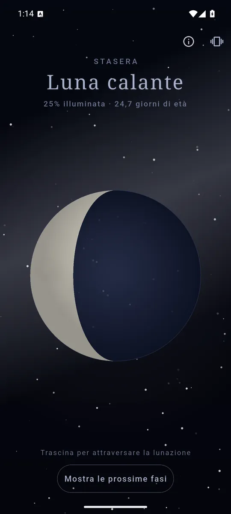
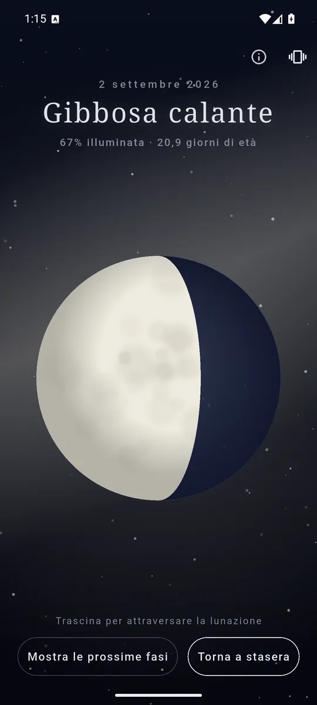
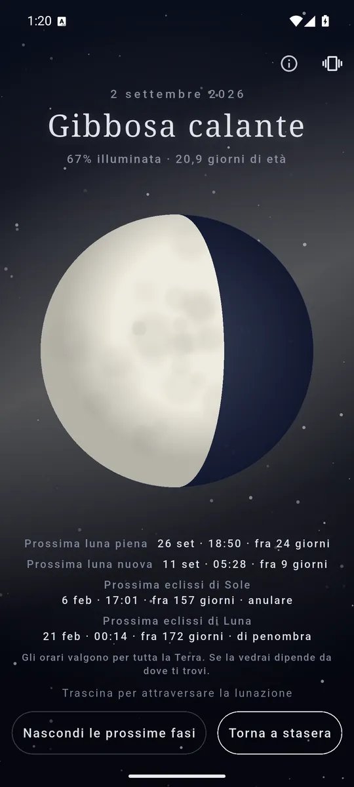

ItalianoEnglish
Si apre e la luna è già lì, com'è adesso: la parte illuminata, l'ombra che la attraversa e il grigio appena visibile del resto del disco — la luce che la Terra le rimanda indietro. Una domanda sola, e la risposta prima che tu abbia finito di formularla.

La fase di adesso, l’illuminazione e l’età: appena apri. 
Trascina, e la luna attraversa il mese sotto il pollice. 
Quando tornano piena e nuova, e le prossime eclissi.
Cosa fa
- La fase per nome e per numero. «Luna calante · 24% illuminata · 22,3 giorni di età»: chi guarda dalla finestra vuole il nome, chi fotografa vuole il numero.
- Il disco è disegnato, non fotografato. Il terminatore — la linea fra luce e ombra — è la curva giusta e non un semicerchio: in tutta la lunazione, tranne due istanti, quella linea è un'ellisse.
- Piena e nuova, con il conto alla rovescia. Data, ora e quanti giorni mancano.
- Le prossime eclissi, con il tipo scritto per esteso — totale, anulare, parziale o di penombra — e l'avvertenza che gli orari valgono per tutta la Terra e non per il tuo balcone.
- Trascina e attraversa la lunazione. La luna cresce e cala sotto il dito, e il telefono batte un colpo a ogni fase attraversata. Doppio tocco per tornare a stasera.
- In italiano e in inglese, secondo la lingua del telefono.
Al minuto giusto, e senza rete
I calcoli seguono gli algoritmi astronomici di Jean Meeus: gli istanti di luna nuova e piena cadono al minuto giusto, e dei test automatici lo verificano prima di ogni versione. Tutto avviene sul telefono — niente posizione, niente rete, niente da scaricare — quindi Moon funziona in montagna, in aereo e con i dati spenti. Che è esattamente dove uno guarda la luna.
I tuoi dati restano tuoi
Non c'è niente da inviare: nessun account, nessuna registrazione, nessun server nostro, e nemmeno la posizione. I permessi sono due — Internet, che serve agli annunci, e la vibrazione del feedback aptico.
Come si paga
Con un banner in fondo, lontano dai comandi, e un interstiziale saltuario solo dopo che hai avuto la tua risposta. Nessun abbonamento, nessuna funzione tenuta in ostaggio.
Dove trovarla
Non è ancora su Google Play. Quando ci sarà, il collegamento comparirà qui.